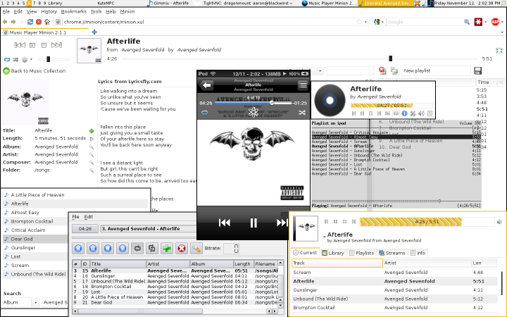

Media Daemon allows you to use your favourite Music Player Daemon (MPD) client to control your iDevice over WiFi. It's perfect for use with those external speakers across the room, or if you just don't want to have to reach into your pocket to change songs.
You can buy Media Daemon directly from the Cydia Store on your iDevice.
Once installed, Media Daemon is automatically running in the background, always ready for you to connect and play. You might want to go into the settings and set a connection password, otherwise anyone could start controlling your iPod's music! You can also turn off the iPod Rewind Controls if you wish (when enabled, it means that the back button will seek to the beginning of the song unless you hit it within the first 5 seconds). Once that's done you're ready to start playing!
Here's what happens when you connect to your iPod with as many MPD clients as you can get your hands on (with a VNC connection in the middle for reference).
Media Daemon should support any MPD client you wish to use, and the MPD wiki has a great selection of them listed here. Those using Linux can find most of these in their distribution's repositories. A few that work particularly well are listed below:
Non-Linux users are usually best off using MPM, but Windows users can check out the Windows clients page for more options.
You may contact us with questions, comments, suggestions, and bugs by email.
{kind=link}